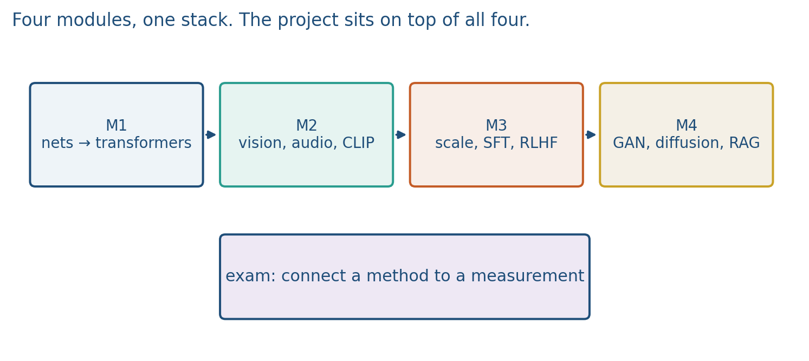
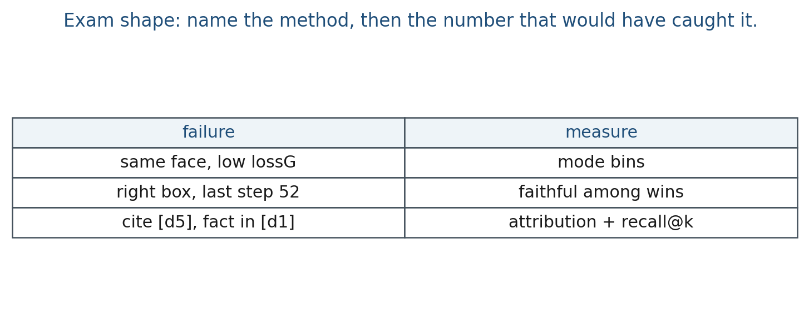

15.1 Exam Review
Four modules. Name the method, then the number that would have caught the failure.
These notes match the lecture slides. Use (slides) on the course hub for the deck.
The exam is cumulative. It asks you to name a method and say what you would measure. Trivia without a metric is not the point of DATA 443/643.
Write the same story the lectures taught. Name the method, say why it exists, sketch the boxes, write the formula, and name a number that would have caught the failure. Fluency is not a check: RAG without recall@k, a GAN without coverage, and CoT without faithfulness are incomplete answers.
The sitting is a closed-book written exam plus the remaining talks. The formula sheet is what you can write, not a trivia list. Practice in that shape: “same face, low ” wants mode bins; “cite [d5], fact in [d1]” wants attribution plus recall@k. Naming a paper without a metric scores poorly.
1. Four modules
| Module | Weeks | Spine |
|---|---|---|
| 1 | 1–3 | Neurons, embeddings, RNNs/gates, attention, GPT vs BERT |
| 2 | 4–6 | Multimodal, ViT patches, contrastive / CLIP / BLIP, audio as tokens |
| 3 | 7–10 | Scaling and efficiency, SFT and adapters, RLHF / DPO, safety and editing |
| 4 | 11–14 | GANs and mode coverage, diffusion and latent text conditioning, CoT / vote / faithfulness, RAG and ReAct |
You should be able to draw the picture (two GAN players; ; retrieve-then-generate) and attach one number to it (coverage, a denoising loss, recall@k, majority-vote accuracy, a faithfulness rate).


2. How to study
Rework the labs on CPU: XOR and embeddings, long-range gates, one attention head, toy CLIP retrieval, 2-D GAN coverage, one reverse diffusion step, vote-and-flag traces, bag-of-words RAG. Redo each note’s practice questions out loud. For every named method, write one sentence of the form “I would change ; I would report on split .”
Formulas worth being able to write:
- neuron:
- attention:
- GAN:
- diffusion jump:
- CFG:
- cosine:
- DPO-shaped check: when the two log-ratio terms match
You do not need to memorize paper years. You do need to say what you would plot after you write the formula.
A compact board checklist:
| Failure you see | Method that was in play | Number that would have caught it |
|---|---|---|
| All fakes look like one face | GAN | coverage / mode bins, not lossG |
| Pretty pictures, missed prompt | latent diffusion + CFG | CLIP image–text cosine and |
| Right box, wrong algebra | CoT | faithfulness rate among correct boxes |
| Vote of a popular wrong number | self-consistency | shared-bug check; vs accuracy plot |
Cite [d5], fact only in [d1] |
RAG | attribution + recall@k |
Calc returned 408, answer 428 |
ReAct | observation used? parse log |
3. What the exam asks
Typical item: given a failure (collapsed modes, ignored chunk, lucky CoT answer, biased CLIP hit), name the method that was in play and the measurement that would have caught it. Another item: pick GPT versus BERT, CLIP versus BLIP, GAN versus diffusion, CoT versus ReAct, and justify with the task plus the metric.
Lab → exam shortcuts: Lab 11 bins = coverage; Lab 12 oracle reverse step = you know ; Lab 13 last-integer vs box = faithfulness; Lab 14 cosine rank + calc log = RAG + ReAct. If you can redo those four on paper, Module 4 is in shape.
Project language belongs here: baseline, one justified change, ablation, failure case. That is the same spine as note 14.3.
Remaining talks
Canvas is official for who speaks when. If you still owe a presentation, bring a failure case (input, output, what broke), not only a demo that worked. Upload what Canvas asks. Time limits on the hub still apply.
4. Teaching this note
This is a review map, not a new method. About 40 minutes at the board walking the four-module table and the failure→metric grid, then ~15 minutes of Karpathy as a recap of the LLM stack (not of GANs/diffusion). Leave 20 minutes for student questions and remaining talks. Weeks 13–14 are CoT, vote/search, faithfulness, RAG, and ReAct; Weeks 11–12 are GANs and diffusion.
Board order:
- 0–12 min. Modules 1–2: neuron, embedding, attention, CLIP cosine. One picture each.
- 12–24 min. Modules 3–4: SFT/RLHF/DPO in one sentence each; GAN vs diffusion; CoT vs RAG vs ReAct.
- 24–40 min. Failure table. Worked exam-style item (GAN collapse; unfaithful CoT; RAG citation).
Then play the Karpathy minutes below. GANs and diffusion are not in that talk; restudy notes 11.1–12.3 and the assigned clips from those weeks.
Bring one page of handwritten formulas and one page of “failure → metric” rows. That beats rereading every HTML slide the night before.
5. Worked example (one exam-style item)
Prompt: “Fakes are sharp. Every fake is the same face. Generator loss is low. What do you measure?”
Answer in the form the exam wants:
- Method: GAN (Week 11). Implicit sampler; can be fooled by one mode.
- Not a measurement:
lossG(it can fall because collapsed). - Measurement: coverage — fraction of fakes nearest each real mode (Lab 11), or precision/recall in a feature space. Report both bins, not a mean.
A second item: “CoT accuracy 90%; a calculator disagrees with half the traces.”
- Method: chain-of-thought; the bug is unfaithful traces (Week 13; Lab 13 already scored it).
- Measurement: among correct boxes, fraction whose parsed steps match the box. Self-consistency may still vote the lucky number.
A third item: “Top-2 cosine missed the gold chunk; the answer still cites it.”
- Method: RAG. Retrieval recall@2 is 0 on that item.
- Check: attribution against the stuffed context, not against the whole corpus. Citing an id that was never retrieved is a fail.
Keep the answers short. The exam is not a blog post.
6. Where students get stuck
- Memorizing paper titles and then blanking on the metric.
- Mixing CoT / self-consistency / ToT / ReAct as one name.
- Using Karpathy as a substitute for Weeks 11–12. That video does not teach .
7. Video
Watch Andrej Karpathy, Intro to Large Language Models as a recap of the stack. Map weeks to minutes; do not try to play the whole hour in class.
| Minutes | What he is doing | Course weeks |
|---|---|---|
| 0:20–11:22 | Inference, then training on internet text | 1–3 (net, tokens, next-token) |
| 11:22–17:52 | How they work; finetune into an assistant | 1–3 architecture; 8 SFT |
| 21:05–27:43 | Comparisons, labels, RLHF; then scaling laws | 7 scaling; 9 RLHF / DPO |
| 27:43–33:32 | Tool use: browser, calculator, interpreter | 14 RAG (browser as retrieve) and ReAct |
| 33:32–35:00 | Multimodality | 4–6 CLIP / vision / audio |
| 35:00–38:02 | Thinking, System 1/2 | 13 CoT / extra tokens |
| 40:45–42:15 | Custom GPTs, files | 14 RAG as a private index |
| 45:43–59:23 | Security (high level) | 10 red-teaming as evaluation, not as a cookbook |
In class, play 11:22–17:52 and 27:43–38:02 (~17 min) if you only have one pass. Students who missed Week 7–9 should add 21:05–27:43. Students who missed Week 13–14 should add 35:00–42:15.
Same URL as notes 13.1, 14.1, and 14.2. Deep Dive chapters from 13.2–13.3 are optional extra, not a replacement for the formula sheet.
Week 11–12 video recap (not Karpathy): generative models from 46:45 (setup / train / collapse); Umar Jamil diffusion I1sPXkm2NH4 from 7:35; Stable Diffusion ZBKpAp_6TGI 0:00–45:00. Talk craft: Peyton Jones sT_-owjKIbA 0:00–20:00.
8. Practice
-
A GAN’s fakes look sharp and every one is the same face. What do you measure besides looking?
-
A RAG answer cites
[d5]but the claim only appears in[d1]. Method name, and the check. -
CoT accuracy is high; a calculator disagrees with half the traces. What exam idea is that, and which week’s lab already scored it?
-
, , . Write . Which week is this, and is it a GAN step?
-
Three CoT answers . Majority? If all three traces compute and still box those numbers, what does the vote fail to catch?